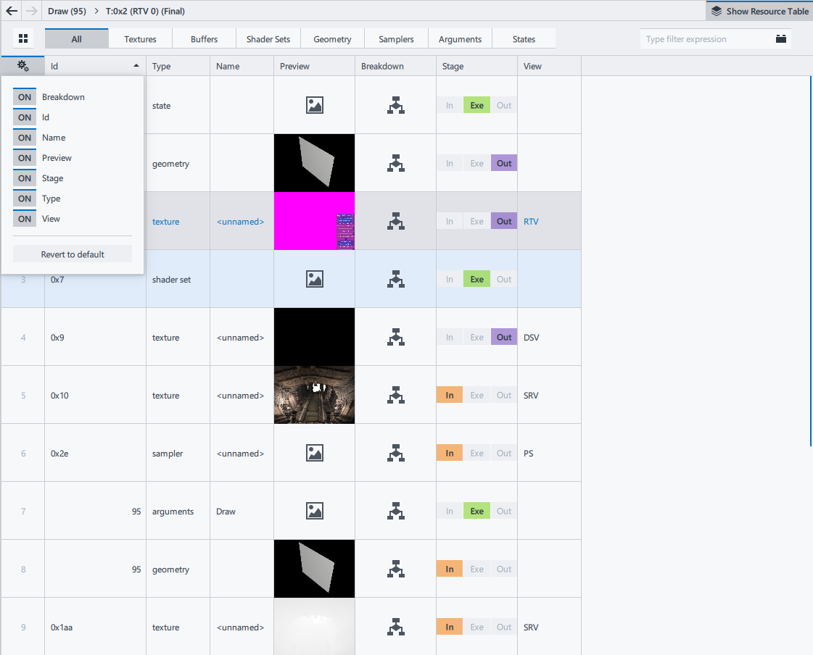
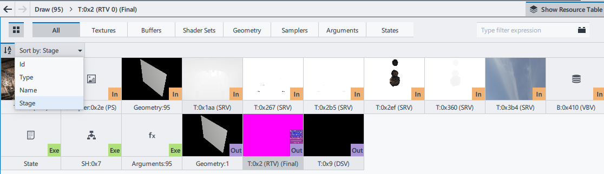

Intel® Graphics Performance Analyzers
User Guide
Resources Pane
|
|
Resource List Displays all resources used by the selected graphics API functions. |
|
|
Resource Viewer Displays details about the resource selected in the Resource List. |
Resource List
All resources are grouped by Input, Execution, and Output stages.
By default, Frame Analyzer shows all resources attributed to the current selection. Use the Filter menu to filter resources by type:
Geometry
Textures
Shaders
Data buffers
Graphics/Compute Pipeline States
Samplers
API call arguments
To filter resources by name, type the desired name or parameter into the Type filter expression field.
Some resources support previews. To see the preview, hover over the resource thumbnail in the Resource List.
Use  Back and Next buttons to navigate back and forth between recently selected resources and events.
Back and Next buttons to navigate back and forth between recently selected resources and events.
For textures, shaders, or geometry, you can choose the following view types:
Table View
To see resources in a tabular view, click the Show Resource Table button.
To configure table columns, click the
 button.
button.To select a resource and open it in the Resource Viewer, click the row with the required resource.
Tile View
Tile view shows only resource thumbnails. To open tile view, click the
 button. Resources can be sorted by resource type, name, ID, or stage.
button. Resources can be sorted by resource type, name, ID, or stage.To select a resource and open it in the Resource Viewer, click the row with the required resource.
Resource Notations
Resource names, except texture and buffer names, are abbreviated and shown in the Resource List and Resource Viewer in the following format:
<resource type>:<resource ID> [<user-defined name>]
Texture names and buffer names are shown in the following format:
<resource type>:<resource ID> (<view type><view ID>)
Resources Names for DirectX API
| Name Component | Description |
|---|---|
|
|
Can be B (buffer) or T (texture). |
|
|
Any positive integer. 0 is an exception used to identify a synthetic DirectX 12 root constant resource. |
Resource Viewer
Resource Viewer displays details of the resource selected in Resource List. Resource Viewer layout depends on the resource type.
Resource Viewer: Geometry
You can rotate the object in any direction by clicking and holding the mouse pointer. To invert normals by 180 degrees, right-click the geometry object. To flip vertical and horizontal planes, middle-click the geometry object.
Resource Viewer: Texture
For textures with mipmaps, 3D textures, and texture arrays, you can select a particular subresource in the  MIP-level selector or the
MIP-level selector or the  Layer selector:
Layer selector:
Grayed-out values in the MIP-level selector or in the Layer selector mean that the corresponding subresources are not defined in the selected resource view.
You can experiment with SRV textures using the following elements:
 Texture 2x2 button - replaces the opened texture with a simple 2x2 pixel texture for the selected events. The experiment creates a new texture with the same name and of the same type, and denoted as [modified].
Texture 2x2 button - replaces the opened texture with a simple 2x2 pixel texture for the selected events. The experiment creates a new texture with the same name and of the same type, and denoted as [modified]. Clamp to Selected MIP Level button - disables all mipmaps of the opened textures that are greater than the current mipmap level of the texture for the selected events. The experiment creates a new texture with the same name and of the same type, and denoted as [modified].
Clamp to Selected MIP Level button - disables all mipmaps of the opened textures that are greater than the current mipmap level of the texture for the selected events. The experiment creates a new texture with the same name and of the same type, and denoted as [modified].Format drop-down list - shows the original texture format and enables texture format replacement (DirectX 11 only).
To disable the applied experiments, click the  button on the texture thumbnail in Resource List.
button on the texture thumbnail in Resource List.
For cube map textures, you can open one face of a cube map by selecting the desired face from the drop-down list. The Default option is a cube map layout.